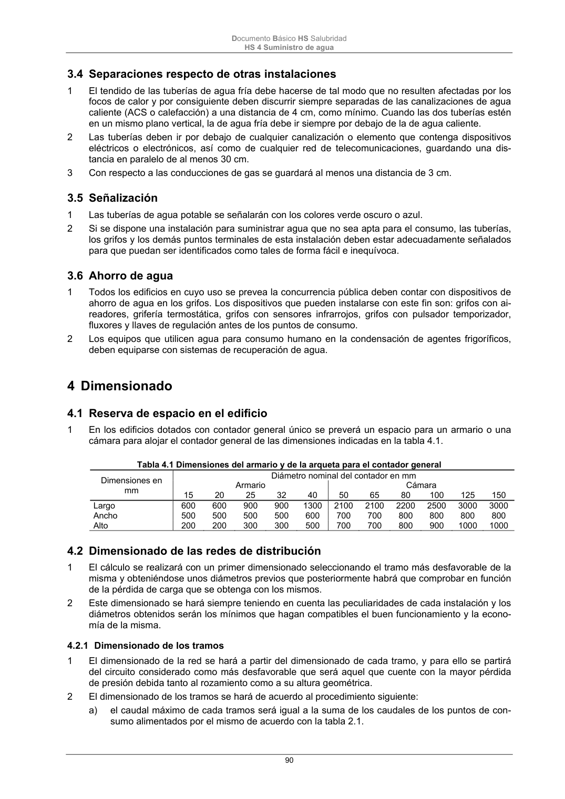

DB-HS · 3.3.6 Grupos motobomba · versión 2022-06-14 · capa oficial
Formatos: JSON compacto · Markdown · PDF fuente
Ámbito del documento · texto del ámbito · documento y tablas
ID técnico a0203 · PDF pág. 89-90 · jerarquía no validada por persona · contrastado con el literal de la página 89 (candidato tipográfico); no validado por persona · padre: raíz
3.3.6 Grupos motobomba 1 Las bombas no deben conectarse directamente a las tuberías de llegada del agua de suministro, sino que deben alimentarse desde un depósito, excepto cuando vayan equipadas con los disposi- tivos de protección y aislamiento que impidan que se produzca depresión en la red. 2 Esta protección debe alcanzar también a las bombas de caudal variable que se instalen en los grupos de presión de acción regulable e incluirá un dispositivo que provoque el cierre de la as- piración y la parada de la bomba en caso de depresión en la tubería de alimentación y un depósito de protección contra las sobrepresiones producidas por golpe de ariete. 3 En los grupos de sobreelevación de tipo convencional, debe instalarse una válvula antirretorno, de tipo membrana, para amortiguar los posibles golpes de ariete. Documento Básico HS Salubridad HS 4 Suministro de agua 90

PDF fuente redistribuible: copia fiel enlazada en esta página (SHA256 verificado).